Votre WordPress,
blindé. En permanence.
Mises à jour, sauvegardes quotidiennes, monitoring de sécurité et corrections techniques — livrés sous abonnement mensuel fixe. Pas d'appels. Pas de surprises.

$ wp core check-update
Checking for WordPress updates...
✓ WordPress 6.7.1 — up to date
$ wp plugin list --update=available
✓ 0 plugins require update
$ backup --snapshot daily
✓ Snapshot created — 2026-05-31 03:00 UTC █
// Le problème
Votre site WordPress est une responsabilité.
Pas une priorité pour votre développeur.
Un site non mis à jour
est une cible ouverte pour les pirates. 95% des sites WordPress hackés n'étaient pas à jour.
Un site lent
fait fuir vos clients. À Dakar comme ailleurs, chaque seconde de chargement supplémentaire coûte des conversions.
Votre développeur
n'a plus le temps, est injoignable, ou facture chaque petite modification. Il vous faut un plan fixe et fiable.
Je prends le relais. Un abonnement mensuel fixe, une communication par écrit, zéro surprise.
// Processus
Simple par conception
Quatre étapes. Pas de réunions, pas d'ambiguïté. Vous gardez le contrôle, on gère la technique.
Vous choisissez une formule
Sélectionnez le plan adapté à votre site. Paiement mensuel sécurisé. Aucun engagement long terme.
Onboarding technique en 24h
Vous recevez un formulaire d'accès sécurisé. On audite votre installation et on prend la main sur votre WordPress.
Vous soumettez vos tickets sur Trello
Besoin d'une correction, d'un ajustement CSS, d'un plugin à configurer ? Créez une carte. On traite dans les délais de votre formule.
Monitoring & rapports automatiques
Mises à jour, sauvegardes, alertes de sécurité — tout tourne en arrière-plan. Vous recevez un rapport mensuel.
99.9%
Uptime garanti
< 24h
Temps de réponse
Daily
Sauvegardes
0
Appel requis
// Compatible avec vos outils
// Tarifs
Un prix fixe. Aucune surprise.
Pas de devis, pas d'heure facturée. Vous savez exactement ce que vous payez chaque mois.
Essentiel
Pour les blogs et sites vitrines.
- ✓ Mises à jour core + plugins + thèmes
- ✓ Sauvegarde quotidienne (rétention 14j)
- ✓ Scan malware hebdomadaire
- ✓ Rapport mensuel
- – Tickets de modification
- – Monitoring uptime 24/7
Pro
Pour les PME et e-commerces actifs.
- ✓ Tout le plan Essentiel
- ✓ Sauvegarde quotidienne (rétention 30j)
- ✓ Monitoring uptime 24/7 + alertes
- ✓ 2 tickets de modification / mois
- ✓ Délai de traitement < 48h
- ✓ Scan malware quotidien
Agence
Pour les agences et sites critiques.
- ✓ Tout le plan Pro
- ✓ 8 tickets de modification / mois
- ✓ Délai de traitement < 24h
- ✓ Sauvegarde quotidienne (rétention 60j)
- ✓ Audit de sécurité trimestriel
- ✓ Accès prioritaire & rapport hebdomadaire
✓ Inclus dans un ticket
- ·Changer un logo ou une image
- ·Ajustement CSS / mise en page
- ·Installation et configuration d'extension
- ·Correction d'un bug d'affichage mobile
- ·Modification de texte ou de formulaire
✗ Hors périmètre
- ·Refonte complète du site
- ·Développement d'un plugin sur-mesure
- ·Création de contenu textuel ou graphique
- ·Intégration e-commerce complexe
- ·Migration complète d'hébergeur
Paiement sécurisé · Facturation mensuelle · Résiliation sans frais · Tarifs Nets
// FAQ
Questions directes.
Réponses directes.
Oui, mais de manière sécurisée. Vous transmettrez vos accès via un formulaire chiffré lors de l'onboarding. Nous n'utilisons jamais le FTP en clair — uniquement SFTP ou accès wp-admin dédié avec compte limité.
Une demande technique discrète soumise via Trello : ajustement CSS, configuration de plugin, correction d'affichage, ajout d'un bloc, etc. Pas de refonte, pas de nouvelle fonctionnalité complexe. Si votre demande dépasse le cadre, vous en êtes informé avec un devis séparé.
Sur les plans Pro et Agence, le monitoring détecte les anomalies avant que la situation ne soit critique. En cas d'incident avéré, on restaure depuis la dernière sauvegarde saine et on nettoie les fichiers infectés. Les clients Essentiel bénéficient de la restauration manuelle sur demande.
Oui, absolument. Vous pouvez demander un upgrade ou un downgrade de votre plan à tout moment. La modification sera effective dès le prochain cycle de facturation mensuelle. Pour résilier, il n'y a aucun frais ni préavis : envoyez-nous simplement un message ou créez un ticket sur votre espace privé. Votre maintenance et votre accès Trello resteront actifs jusqu'à la fin de la période déjà payée.
Oui — o2switch, OVH, Hostinger, WP Engine, Kinsta, Cloudways, et la majorité des hébergeurs mutualisés ou VPS compatibles WordPress. Si vous avez un doute sur votre hébergeur, posez la question avant de souscrire.